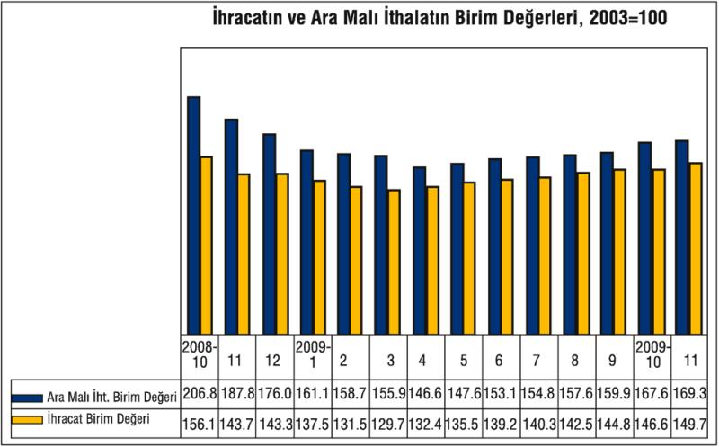
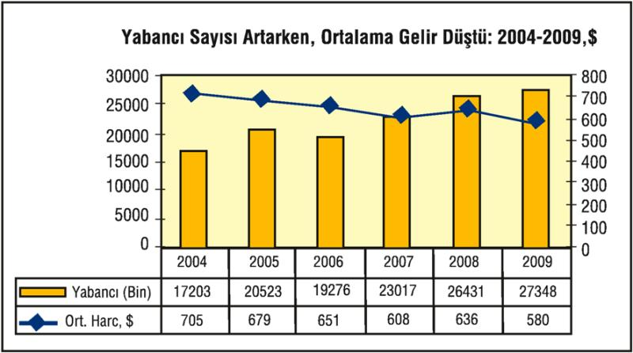

Küresel ekonomik krizin iç ve dış talepte yol açtığı daralma hem iç satışları hem de ihracatı önemli ölçüde azaltırken, bundan en fazla sanayi sektörü olumsuz etkilendi.
Hem iç hem de dış talepte yaşanan azalma imalat sanayi sektörünün kapasite kullanım oranını tarihi noktalara düşürdü.
2004-2007 yıllara arasında yüzde 80'in üzerinde seyreden kapasite kullanım oranı 2008 yılında yüzde 78,1'e kadar geriledi. 2009 yılında da azalmaya devam eden imalat sanayi sektörünün kapasite kullanım oranı ortalama yüzde 68,9'a kadar indi.
Kapasite kullanım oranının azalmasında iç ve dış talepte yaşanan azalma etkili oluyor.
Sıcak para girişinin yarattığı likidite bolluğuyla bankaların tüketicileri borçlandırması 2003-2007 yılları arasında ailelerin tüketim harcamalarında önemli artışlara yol açmıştı. Bu artış, ithalat ve tüketim malı üretimini artırarak ekonominin büyümesini sağlamıştı.
Ancak, sıcak para girişinin azalması ve 2008 yılının son çeyreğinden itibaren net sıcak para çıkışının başlamasıyla birlikte bankaların tüketiciye kullandırdığı borçları azaltması tüketim harcamalarının hızla azalmasına neden oldu. 2008 yılında reel olarak yüzde 0,3 oranında azalan tüketim harcamaları da 2009'un ilk çeyreğinde yüzde 10'un üstünde daraldı. İzleyen çeyreklerde toparlanan ailelerin tüketim harcamaları son çeyrekte yüzde 5'e yakın artarak, 2009'un son döneminin yüzde 6'lık büyümesine katkıda bulundu.
Son çeyrekteki iyileşmeye rağmen, 2009'un tamamında yüzde 2,3 küçülen hanehalkı harcamaları, iç talebin daralması anlamına gelir. Özellikle gıda dışı kalemlere ilişkin harcama niyetlerinin 2009'da, birçok özendirmeye, fiyat düşüşüne rağmen ertelendiği görüldü.
İç pazarda, gıda ve konut ihtiyaç kalemleri dışındaki mal ve hizmetlere talebin azalması, bu mal ve hizmet fiyatlarının hızla düşmesini de beraberinde getirdi. Özellikle de giyim ve dayanıklı tüketim mallarında TÜFE hızla düştü. İç fiyatlarda somutlanan darboğaz ihracat cephesinde de görüldü.
Yıllık ihracat, 2008'e göre, yüzde 23 düşüşle 2009'da 102 milyar doları bulsa da, anlaşıldı ki, bu ihracat rakamlarına da fiyat kırılarak ulaşılabilmiş.

Kaynak: TÜİK
Birim ihracat değeri, birim malın fiyatındaki değişimi verir. Birim ihracat değerleri endeksi, 2009'da enkazın büyümesinin önünün ancak fiyat kırmakla alınabildiğini gösteriyor.
Son verilerden anlaşılıyor ki, ihraç ürünlerinin tamamında fiyatlar, Ekim 2008-Ekim 2009 arası 12 ayda yüzde 6; ihracatın yüzde 93'ünü oluşturan sanayi ürünlerinin fiyatları da yüzde 6,5 düştü. Yani çeşitli sanayi ürünleri fiyatlarının ortalama yüzde 6,5 düşürülmesi pahasına ihracat düşüşü 30 milyar dolarda frenlenebildi. Üstelik, ithalatta yüzde 70 payı olan aramalı ithalatında yüzde 19 fiyat düşüşü yaşanmışken... Ara malı ithalatın birim değeri, enerjiden, çeşitli girdilere kadar ithal malların fiyatları, 2008 Ekim'inden 2009'un Ekimine yüzde 19 düşmüş görünüyor.
İthal girdi avantajına bir de reel ücretteki gerilemenin getirdiği avantajı eklemek gerek. TÜİK verilerinden, sanayide reel ücretlerin 2008'in 3. çeyreğinden 2009'un 3. çeyreğine kadar yüzde 7 azaldığı görülüyor.
Enerjiden, çeşitli girdilere kadar ithal ürünlerde fiyatlar beşte bire yakın düşmesine, reel ücretler yüzde 7 geriletilmesine rağmen, ihraç fiyatlarını yüzde 6 indirerek ihracat yapılmış, bütün buna rağmen ihracatın, 30 milyar dolar azalması önlenememiştir. Bu performans, yoksullaşma pahasına ayakta kalmaya çalışmaktır. Fiyatlar böyle yerlerde sürünmeye devam edince, bundan sermaye birikimi de çıkmamaktadır. Düşük ücretle, düşük kâr oranlarıyla bir üretimdir bu ve bu üretim modeli, birikim bırakmıyor. Birikim olmadıkça da geriye, genişletilmiş yeniden üretim değil, yoksullaştıran bir faaliyet kaldı.
Yoksullaştırıcı ihracatla, iç pazara satışlarla çarkını döndürmeye çalışan sanayideki birikimsiz toparlanmaya, turizm de eşlik ediyor. Aynı yoksullaştırıcı büyüme turizmde de görülüyor. Turist başına harcama 2009'da 580 dolara kadar düştü. 2009'da yabancı ziyaretçi sayısı yüzde 3,5 arttı ve 27,4 milyona yaklaştı. Ama aynı sürede bu yabancılardan elde edilen turizm geliri yüzde 6 azaldı ve 15,8 milyar dolara düştü. Bu, geçen yıla göre, 1 milyon daha fazla turist girişi sağlayıp 1 milyar dolar daha az gelir elde etmek, yani müthiş bir yoksullaşma demek!...

Kaynak: TÜİK
2004'te 705 dolar olan kişi başına turist geliri, her yıl düzenli olarak azaldı ve 2007'de 608 dolara indi. 2008'de biraz toparlanıp 636 dolar olan turist başına gelir, 2009'da ise müthiş bir biçimde dibe vurdu ve 580 dolara kadar geriledi. Bu, 2004'teki fiyatın yüzde 28 altına inmek demek.